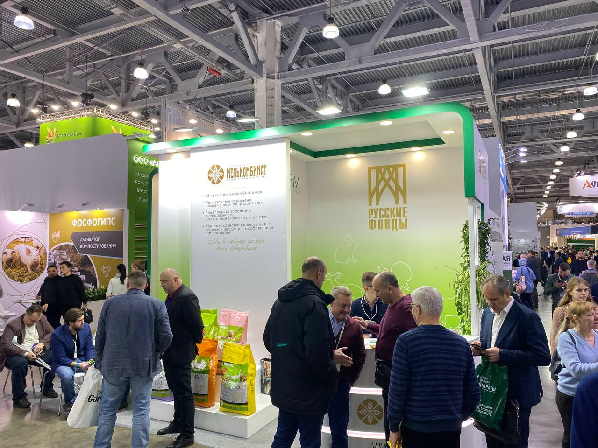

С 25 по 27 января 2023 года в выставочном комплексе «Крокус Экспо» проходила четвертая Международная выставка племенного дела, кормов, ветеринарии и технологий для животноводства, свиноводства, птицеводства и кормопроизводства «АГРОС 2023», на которой ОАО «Мелькомбинат», входящее в состав ГК «Мелком», презентовало премиальный корм для сельскохозяйственных животных ТМ «Экорм».
Все рецептуры полнорационных комбикормов торговой марки «Экорм» разрабатываются собственным научно-технологическим центром ГК «Мелком». Эти корма помогают заводчикам сельскохозяйственных животных раскрыть их генетический потенциал и добиться максимальной продуктивности, обеспечивают правильное, научно обоснованное, сбалансированное кормление, при котором питательные вещества поступают в организм животных в нужном количестве и в правильном соотношении.
Производство кормов осуществляется на современном швейцарском оборудовании, всё сырьё проходит входной контроль, а в процессе производства пробы кормов анализируются по основным физическим показателям, давая возможность оперативно изменять параметры технологического процесса. Также обязательный контроль на базе собственной современной лаборатории проходит и готовая продукция, что гарантирует получение потребителем качественного и высокоэффективного комбикорма.
Олег Старовойтов, генеральный директор ОАО «Мелькомбинат»: «Наша компания уже много лет производит стабильно качественные корма классов эконом, премиум и супер-премиум. Все корма разрабатываются с соблюдением ступенчатого контроля качества и безопасности, с учетом пищевых потребностей, возраста, породы каждого животного с учетом обратной связи в рамках тесного сотрудничества с мелкими и крупными сельхозхозяйствами. Комбикорма «Экорм» создаются только из качественного сырья, без консервантов, ГМО, гормонов и стимуляторов роста и способствуют поддержанию крепкого здоровья животных, а также их стремительному росту».
В рамках выставки представители ГК «МЕЛКОМ» заключили ряд ключевых стратегических соглашений с новыми и текущими партнёрами.
Вернутся на Главную страницу